Aperture Photometry
1. Load Data
The DataBrowser class allows us to query and filter our synced data. Here we’ll explore the available keys and their values to understand what data we have access to. This is essential for selecting the appropriate images for photometric analysis.
Let’s filter our data to find specific images. We’ll search for:
Target: T00528 (the astronomical object of interest)
Telescope: 7DT16 (specific telescope configuration)
Filter: r-band (red filter for photometric measurements)
Pattern: Files ending with
*100.fits(100-second exposure images)
[1]:
from ezphot.utils import DataBrowser
dbrowser = DataBrowser('scidata')
dbrowser.objname = 'T00528'
dbrowser.filter = 'm600'
target_imgset = dbrowser.search('*100.fits', return_type = 'science')
target_imglist = target_imgset.target_images
[INFO] Found 90 files matching '/home/hhchoi1022/ezphot/data/scidata/*/*/T00528/*/m600/*100.fits'
Loading Science Images: 100%|██████████| 90/90 [00:00<00:00, 93.42it/s]
[2]:
target_img = target_imglist[0]
target_img.show('coord')
[2]:
(<Figure size 800x600 with 2 Axes>,
<WCSAxes: title={'center': 'calib_7DT14_T00528_20250906_025855_m600_100.fits'}>)

2. Aperture Photometry
Aperture photometry measures the total flux from astronomical sources by summing pixel values within defined circular or elliptical apertures. This method is widely used for precise photometric measurements and is essential for determining stellar magnitudes and flux measurements.
As you did with source-extractor, you can perform photometry easily. The AperturePhotometry class provides several methods for different photometric approaches, including circular apertures, elliptical apertures, and integration with the photutils library.
[3]:
from ezphot.methods import AperturePhotometry
aperturephot = AperturePhotometry()
aperturephot.help()
Help for AperturePhotometry
Public methods:
- circular_photometry(target_img: Union[ezphot.imageobjects.scienceimage.ScienceImage, ezphot.imageobjects.referenceimage.ReferenceImage], x_arr: Union[float, list, numpy.ndarray], y_arr: Union[float, list, numpy.ndarray], aperture_diameter_arcsec: Union[float, list] = [5, 7, 10], aperture_diameter_seeing: Union[float, list] = [3.5, 4.5], annulus_width_arcsec: Union[float, list] = None, unit: str = 'pixel', target_bkg: Optional[ezphot.imageobjects.background.Background] = None, target_mask: Union[str, pathlib.Path, numpy.ndarray] = None, target_bkgrms: Optional[ezphot.imageobjects.errormap.Errormap] = None, save: bool = True, verbose: bool = True, visualize: bool = True, save_fig: bool = False, **kwargs)
- elliptical_photometry(target_img: Union[ezphot.imageobjects.scienceimage.ScienceImage, ezphot.imageobjects.referenceimage.ReferenceImage], x_arr: Union[float, list, numpy.ndarray], y_arr: Union[float, list, numpy.ndarray], sma_arr: Union[float, list, numpy.ndarray], smi_arr: Union[float, list, numpy.ndarray], theta_arr: Union[float, list, numpy.ndarray], unit: str = 'pixel', annulus_ratio: float = None, target_bkg: Optional[ezphot.imageobjects.background.Background] = None, target_mask: Union[str, pathlib.Path, numpy.ndarray] = None, target_bkgrms: Optional[ezphot.imageobjects.errormap.Errormap] = None, save: bool = True, verbose: bool = True, visualize: bool = True, save_fig: bool = False, **kwargs)
- photutils_photometry(target_img: Union[ezphot.imageobjects.scienceimage.ScienceImage, ezphot.imageobjects.referenceimage.ReferenceImage, ezphot.imageobjects.calibrationimage.CalibrationImage], target_bkg: Optional[ezphot.imageobjects.background.Background] = None, target_bkgrms: Optional[ezphot.imageobjects.errormap.Errormap] = None, target_mask: Optional[ezphot.imageobjects.mask.Mask] = None, detection_sigma: float = 1.5, aperture_diameter_arcsec: Union[float, list] = [5, 7, 10], kron_factor: float = 2.5, minarea_pixels: int = 5, calc_accurate_fwhm: bool = True, save: bool = True, verbose: bool = True, visualize: bool = True, save_fig: bool = False, **kwargs)
- run_photometry(target_img: Union[ezphot.imageobjects.scienceimage.ScienceImage, ezphot.imageobjects.referenceimage.ReferenceImage, ezphot.imageobjects.calibrationimage.CalibrationImage], target_bkg: Optional[ezphot.imageobjects.background.Background] = None, target_bkgrms: Optional[ezphot.imageobjects.errormap.Errormap] = None, target_mask: Optional[ezphot.imageobjects.mask.Mask] = None, sex_params: dict = None, detection_sigma: float = 5, aperture_diameter_arcsec: Union[float, list] = [5, 7, 10], aperture_diameter_seeing: Union[float, list] = [3.5, 4.5], saturation_level: float = 60000, kron_factor: float = 2.5, save: bool = True, verbose: bool = True, visualize: bool = True, save_fig: bool = False, **kwargs)
- sex_photometry(target_img: Union[ezphot.imageobjects.scienceimage.ScienceImage, ezphot.imageobjects.referenceimage.ReferenceImage, ezphot.imageobjects.calibrationimage.CalibrationImage], target_bkg: Optional[ezphot.imageobjects.background.Background] = None, target_bkgrms: Optional[ezphot.imageobjects.errormap.Errormap] = None, target_mask: Optional[ezphot.imageobjects.mask.Mask] = None, sex_params: dict = None, detection_sigma: float = 5, aperture_diameter_arcsec: Union[float, list] = [5, 7, 10], aperture_diameter_seeing: Union[float, list] = [3.5, 4.5], saturation_level: float = 60000, kron_factor: float = 2.5, save: bool = True, verbose: bool = True, visualize: bool = True, save_fig: bool = False, **kwargs)
[4]:
target_catalog = aperturephot.sex_photometry(
target_img = target_img,
target_bkg = None,
target_bkgrms = None,
target_mask = None,
sex_params = None,
detection_sigma = 3,
aperture_diameter_arcsec = [5, 7, 10],
aperture_diameter_seeing = [2.5, 3.5],
saturation_level = 60000,
kron_factor = 2.5,
save = False,
verbose = False,
visualize = True,
save_fig = False,
)
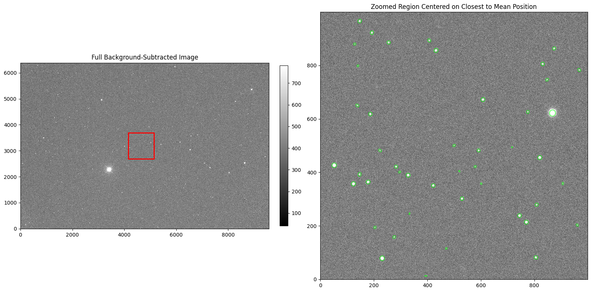
The output will be a Catalog instance, which contains information about the exposure and catalog data.
This includes metadata about the observation (exposure time, filter, telescope), the detected sources, and their photometric measurements.
[5]:
print(target_catalog.info)
Info ============================================
path: /home/hhchoi1022/ezphot/data/scidata/7DT/7DT_C361K_HIGH_1x1/T00528/7DT14/m600/calib_7DT14_T00528_20250906_025855_m600_100.fits.cat
target_img: /home/hhchoi1022/ezphot/data/scidata/7DT/7DT_C361K_HIGH_1x1/T00528/7DT14/m600/calib_7DT14_T00528_20250906_025855_m600_100.fits
obsdate: 2025-09-06T02:58:55.000
filter: m600
exptime: 100.0
depth: 17.602
seeing: 3.19399596
catalog_type: all
ra: 326.2509829204
dec: -77.26234951715
fov_ra: 1.347
fov_dec: 0.899
objname: T00528
observatory: 7DT
telname: 7DT14
aperture_diameter_arcsec: None
===================================================
[6]:
print('exptime: ', target_catalog.info.exptime)
print('filter: ', target_catalog.info.filter)
print('telname: ', target_catalog.info.telname)
print('objname: ', target_catalog.info.objname)
print('ra: ', target_catalog.info.ra)
print('dec: ', target_catalog.info.dec)
exptime: 100.0
filter: m600
telname: 7DT14
objname: T00528
ra: 326.2509829204
dec: -77.26234951715
[7]:
target_catalog.data
[7]:
| NUMBER | FLUX_AUTO | FLUXERR_AUTO | FLUX_APER | FLUX_APER_1 | FLUX_APER_2 | FLUX_APER_3 | FLUX_APER_4 | FLUXERR_APER | FLUXERR_APER_1 | FLUXERR_APER_2 | FLUXERR_APER_3 | FLUXERR_APER_4 | MAG_AUTO | MAGERR_AUTO | MAG_APER | MAG_APER_1 | MAG_APER_2 | MAG_APER_3 | MAG_APER_4 | MAGERR_APER | MAGERR_APER_1 | MAGERR_APER_2 | MAGERR_APER_3 | MAGERR_APER_4 | FWHM_IMAGE | FWHM_WORLD | X_IMAGE | Y_IMAGE | XWIN_IMAGE | YWIN_IMAGE | X_WORLD | Y_WORLD | ALPHA_J2000 | DELTA_J2000 | FLAGS | CLASS_STAR | THRESHOLD | A_IMAGE | B_IMAGE | ELONGATION | ELLIPTICITY | KRON_RADIUS | FLUX_RADIUS | THETA_IMAGE | THETA_WORLD | THETA_SKY | THETA_J2000 | BACKGROUND | FLUX_MAX | ISOAREA_IMAGE | SKYSIG | SKYVAL | DETECT_THRESH | NPIX_AUTO | NPIX_APER | PIXSIZE_APER | NPIX_APER_1 | PIXSIZE_APER_1 | NPIX_APER_2 | PIXSIZE_APER_2 | NPIX_APER_3 | PIXSIZE_APER_3 | NPIX_APER_4 | PIXSIZE_APER_4 |
|---|---|---|---|---|---|---|---|---|---|---|---|---|---|---|---|---|---|---|---|---|---|---|---|---|---|---|---|---|---|---|---|---|---|---|---|---|---|---|---|---|---|---|---|---|---|---|---|---|---|---|---|---|---|---|---|---|---|---|---|---|---|---|---|---|
| ct | ct | ct | ct | ct | ct | ct | ct | ct | ct | ct | ct | mag | mag | mag | mag | mag | mag | mag | mag | mag | mag | mag | mag | pix | deg | pix | pix | pix | pix | deg | deg | deg | deg | ct | pix | pix | pix | deg | deg | deg | deg | ct | ct | pix2 | ||||||||||||||||||||
| int64 | float64 | float64 | float64 | float64 | float64 | float64 | float64 | float64 | float64 | float64 | float64 | float64 | float64 | float64 | float64 | float64 | float64 | float64 | float64 | float64 | float64 | float64 | float64 | float64 | float64 | float64 | float64 | float64 | float64 | float64 | float64 | float64 | float64 | float64 | int64 | float64 | float64 | float64 | float64 | float64 | float64 | float64 | float64 | float64 | float64 | float64 | float64 | float64 | float64 | int64 | str7 | str7 | int64 | float64 | float64 | float64 | float64 | float64 | float64 | float64 | float64 | float64 | float64 | float64 |
| 1 | 38647.52 | 991.3517 | 22998.9 | 30546.13 | 36175.91 | 32673.24 | 37618.55 | 459.6324 | 597.7336 | 791.7775 | 661.254 | 868.5319 | -11.4678 | 0.0279 | -10.9043 | -11.2124 | -11.396 | -11.2855 | -11.4385 | 0.0217 | 0.0213 | 0.0238 | 0.022 | 0.0251 | 11.98 | 0.001684873 | 75.128 | 37.5339 | 75.8524 | 38.0625 | 323.16533287 | -77.69521716 | 323.1653329 | -77.6952172 | 0 | 0.386 | 59.59745 | 3.443 | 2.886 | 1.193 | 0.162 | 4.1 | 4.266 | 50.66 | 50.01 | 39.99 | 39.99 | 413.4048 | 672.8177 | 153 | 39.7316 | 404.634 | 3 | 524.7481734939145 | 76.5667421487148 | 9.873591236996 | 150.07081461148098 | 13.8230277317944 | 306.2669685948592 | 19.747182473992 | 195.27601427764165 | 15.768105260828316 | 382.7409879841777 | 22.075347365159644 |
| 2 | 31414.15 | 926.4174 | 20139.03 | 26122.52 | 30745.0 | 28185.62 | 31678.28 | 447.4653 | 583.4359 | 778.6 | 648.0684 | 855.0795 | -11.2428 | 0.032 | -10.7601 | -11.0425 | -11.2194 | -11.1251 | -11.2519 | 0.0241 | 0.0243 | 0.0275 | 0.025 | 0.0293 | 10.94 | 0.001538636 | 362.5956 | 31.8846 | 363.2296 | 32.4371 | 323.35381121 | -77.697741609 | 323.3538112 | -77.6977416 | 0 | 0.399 | 59.59745 | 3.374 | 2.465 | 1.369 | 0.269 | 4.21 | 3.976 | 58.82 | 57.86 | 32.14 | 32.14 | 413.4056 | 551.0135 | 130 | 39.7316 | 404.634 | 3 | 463.1013704861377 | 76.5667421487148 | 9.873591236996 | 150.07081461148098 | 13.8230277317944 | 306.2669685948592 | 19.747182473992 | 195.27601427764165 | 15.768105260828316 | 382.7409879841777 | 22.075347365159644 |
| 3 | 40581.68 | 916.7119 | 26021.62 | 33748.95 | 38760.19 | 35833.05 | 39855.07 | 472.4267 | 608.257 | 798.3595 | 670.7977 | 873.3986 | -11.5208 | 0.0245 | -11.0383 | -11.3207 | -11.471 | -11.3857 | -11.5012 | 0.0197 | 0.0196 | 0.0224 | 0.0203 | 0.0238 | 7.78 | 0.001093788 | 8245.5518 | 33.5234 | 8246.6419 | 34.3475 | 328.55363044 | -77.692078445 | 328.5536304 | -77.6920784 | 0 | 0.612 | 59.59745 | 2.998 | 2.811 | 1.067 | 0.063 | 4.06 | 3.966 | -75.53 | -74.56 | -15.44 | -15.44 | 412.7901 | 785.5968 | 147 | 39.7316 | 404.634 | 3 | 436.4097190515532 | 76.5667421487148 | 9.873591236996 | 150.07081461148098 | 13.8230277317944 | 306.2669685948592 | 19.747182473992 | 195.27601427764165 | 15.768105260828316 | 382.7409879841777 | 22.075347365159644 |
| 4 | 33209.32 | 924.2328 | 22984.11 | 28808.86 | 31525.85 | 30498.24 | 32474.5 | 459.707 | 592.0873 | 780.0289 | 654.369 | 856.9317 | -11.3032 | 0.0302 | -10.9036 | -11.1488 | -11.2467 | -11.2107 | -11.2789 | 0.0217 | 0.0223 | 0.0269 | 0.0233 | 0.0287 | 7.94 | 0.001117429 | 2102.3037 | 29.5242 | 2103.0907 | 30.1978 | 324.49871657 | -77.705687354 | 324.4987166 | -77.7056874 | 0 | 0.945 | 59.59745 | 2.778 | 2.63 | 1.056 | 0.053 | 4.46 | 3.704 | 46.36 | 45.75 | 44.25 | 44.25 | 407.7099 | 641.1415 | 125 | 39.7316 | 404.634 | 3 | 456.5702189346599 | 76.5667421487148 | 9.873591236996 | 150.07081461148098 | 13.8230277317944 | 306.2669685948592 | 19.747182473992 | 195.27601427764165 | 15.768105260828316 | 382.7409879841777 | 22.075347365159644 |
| 5 | 292673.9 | 1347.179 | 203789.8 | 252893.4 | 284512.7 | 267186.7 | 290039.4 | 957.6087 | 1107.023 | 1263.68 | 1163.222 | 1317.826 | -13.666 | 0.005 | -13.273 | -13.5073 | -13.6353 | -13.567 | -13.6561 | 0.0051 | 0.0048 | 0.0048 | 0.0047 | 0.0049 | 6.45 | 0.0009075626 | 4620.1943 | 10.1107 | 4621.0674 | 10.7644 | 326.16200781 | -77.71061399 | 326.1620078 | -77.710614 | 24 | 0.983 | 59.59745 | 3.524 | 3.227 | 1.092 | 0.084 | 3.5 | 3.599 | -84.84 | -84.16 | -5.84 | -5.84 | 411.3973 | 5768.605 | 366 | 39.7316 | 404.634 | 3 | 437.643846599113 | 76.5667421487148 | 9.873591236996 | 150.07081461148098 | 13.8230277317944 | 306.2669685948592 | 19.747182473992 | 195.27601427764165 | 15.768105260828316 | 382.7409879841777 | 22.075347365159644 |
| 6 | 6307.775 | 712.5124 | 3644.712 | 4837.75 | 5971.578 | 5543.566 | 6582.525 | 367.9676 | 506.8893 | 698.6508 | 575.8585 | 765.7765 | -9.4997 | 0.1227 | -8.9042 | -9.2116 | -9.4402 | -9.3595 | -9.546 | 0.1096 | 0.1138 | 0.1271 | 0.1128 | 0.1263 | 8.97 | 0.001262043 | 5419.2036 | 7.6462 | 5420.7995 | 8.9837 | 326.69024758 | -77.709463796 | 326.6902476 | -77.7094638 | 16 | 0.478 | 59.59745 | 1.692 | 1.328 | 1.274 | 0.215 | 6.69 | 4.093 | -22.66 | -21.7 | -68.3 | -68.3 | 410.8142 | 180.6123 | 19 | 39.7316 | 404.634 | 3 | 315.93703783216375 | 76.5667421487148 | 9.873591236996 | 150.07081461148098 | 13.8230277317944 | 306.2669685948592 | 19.747182473992 | 195.27601427764165 | 15.768105260828316 | 382.7409879841777 | 22.075347365159644 |
| 7 | 4245.877 | 576.4492 | 3518.885 | 3945.662 | 3866.93 | 4075.033 | 3468.544 | 367.4715 | 497.5763 | 659.9778 | 553.221 | 720.5095 | -9.0699 | 0.1474 | -8.866 | -8.9903 | -8.9684 | -9.0253 | -8.8504 | 0.1134 | 0.137 | 0.1854 | 0.1474 | 0.2256 | 7.45 | 0.001048418 | 3311.4226 | 5.5842 | 3312.721 | 6.4392 | 325.29682533 | -77.711414744 | 325.2968253 | -77.7114147 | 16 | 0.454 | 59.59745 | 1.399 | 1.111 | 1.259 | 0.206 | 6.74 | 3.168 | 62.03 | 61.79 | 28.21 | 28.21 | 408.249 | 132.9214 | 12 | 39.7316 | 404.634 | 3 | 221.82037706372554 | 76.5667421487148 | 9.873591236996 | 150.07081461148098 | 13.8230277317944 | 306.2669685948592 | 19.747182473992 | 195.27601427764165 | 15.768105260828316 | 382.7409879841777 | 22.075347365159644 |
| 8 | 11559.7 | 518.9249 | 8931.155 | 10928.57 | 12716.76 | 11501.09 | 12790.7 | 353.2402 | 451.0243 | 594.2294 | 497.7698 | 649.3504 | -10.1574 | 0.0488 | -9.8773 | -10.0964 | -10.2609 | -10.1518 | -10.2672 | 0.043 | 0.0448 | 0.0507 | 0.047 | 0.0551 | 10.1 | 0.001420322 | 5684.5562 | 1.4419 | 5685.4647 | 2.3662 | 326.86570036 | -77.709604301 | 326.8657004 | -77.7096043 | 24 | 0.799 | 59.59745 | 2.964 | 1.318 | 2.249 | 0.555 | 3.97 | 3.059 | -0.05 | 1.17 | 88.83 | 88.83 | 412.5799 | 456.1069 | 53 | 39.7316 | 404.634 | 3 | 193.43029572524594 | 76.5667421487148 | 9.873591236996 | 150.07081461148098 | 13.8230277317944 | 306.2669685948592 | 19.747182473992 | 195.27601427764165 | 15.768105260828316 | 382.7409879841777 | 22.075347365159644 |
| 9 | 8265.199 | 563.9052 | 6122.343 | 7277.019 | 8555.404 | 7575.233 | 8827.637 | 340.4388 | 438.3348 | 583.9261 | 485.5898 | 640.7861 | -9.7931 | 0.0741 | -9.4673 | -9.6549 | -9.8306 | -9.6985 | -9.8646 | 0.0604 | 0.0654 | 0.0741 | 0.0696 | 0.0788 | 8.77 | 0.001234096 | 2405.2378 | 1.5734 | 2406.122 | 2.7059 | 324.69828373 | -77.710430949 | 324.6982837 | -77.7104309 | 24 | 0.575 | 59.59745 | 2.326 | 1.322 | 1.759 | 0.431 | 5.22 | 3.246 | 3.23 | 2.16 | 87.84 | 87.84 | 406.3509 | 315.5838 | 39 | 39.7316 | 404.634 | 3 | 263.2279758864327 | 76.5667421487148 | 9.873591236996 | 150.07081461148098 | 13.8230277317944 | 306.2669685948592 | 19.747182473992 | 195.27601427764165 | 15.768105260828316 | 382.7409879841777 | 22.075347365159644 |
| ... | ... | ... | ... | ... | ... | ... | ... | ... | ... | ... | ... | ... | ... | ... | ... | ... | ... | ... | ... | ... | ... | ... | ... | ... | ... | ... | ... | ... | ... | ... | ... | ... | ... | ... | ... | ... | ... | ... | ... | ... | ... | ... | ... | ... | ... | ... | ... | ... | ... | ... | ... | ... | ... | ... | ... | ... | ... | ... | ... | ... | ... | ... | ... | ... |
| 2474 | 7838.857 | 498.4425 | 6465.944 | 7727.827 | 8232.925 | 7963.18 | 8529.242 | 350.0627 | 448.7183 | 591.7709 | 495.5002 | 648.7945 | -9.7356 | 0.0691 | -9.5266 | -9.7201 | -9.7889 | -9.7527 | -9.8273 | 0.0588 | 0.0631 | 0.0781 | 0.0676 | 0.0826 | 10.08 | 0.001418205 | 1.9264999999999999 | 5463.5166 | 2.92 | 5464.5788 | 323.26117583 | -76.933052258 | 323.2611758 | -76.9330523 | 24 | 0.649 | 59.59745 | 2.192 | 1.44 | 1.522 | 0.343 | 4.33 | 2.859 | -83.18 | -85.77 | -4.23 | -4.23 | 399.8498 | 318.9565 | 43 | 39.7316 | 404.634 | 3 | 185.9211115982412 | 76.5667421487148 | 9.873591236996 | 150.07081461148098 | 13.8230277317944 | 306.2669685948592 | 19.747182473992 | 195.27601427764165 | 15.768105260828316 | 382.7409879841777 | 22.075347365159644 |
| 2475 | 269105.3 | 1319.787 | 184908.8 | 232071.5 | 261069.4 | 245685.2 | 266546.9 | 918.1157 | 1069.537 | 1226.914 | 1126.513 | 1283.94 | -13.5748 | 0.0053 | -13.1674 | -13.4141 | -13.5419 | -13.4759 | -13.5644 | 0.0054 | 0.005 | 0.0051 | 0.005 | 0.0052 | 6.68 | 0.0009400659 | 438.8226 | 5681.6372 | 439.7165 | 5682.6712 | 323.5366523 | -76.904671874 | 323.5366523 | -76.9046719 | 0 | 0.981 | 59.59745 | 3.563 | 3.202 | 1.113 | 0.102 | 3.5 | 3.669 | -80.73 | -83.82 | -6.18 | -6.18 | 392.0879 | 5063.354 | 350 | 39.7316 | 404.634 | 3 | 439.0592299081312 | 76.5667421487148 | 9.873591236996 | 150.07081461148098 | 13.8230277317944 | 306.2669685948592 | 19.747182473992 | 195.27601427764165 | 15.768105260828316 | 382.7409879841777 | 22.075347365159644 |
| 2476 | 5573.987 | 599.6484 | 4533.4 | 5610.22 | 6047.519 | 5739.358 | 5694.188 | 373.4976 | 510.2263 | 713.6597 | 576.5216 | 793.4397 | -9.3654 | 0.1168 | -9.1411 | -9.3724 | -9.4539 | -9.3972 | -9.3886 | 0.0895 | 0.0988 | 0.1282 | 0.1091 | 0.1513 | 8.27 | 0.001162706 | 8143.3071 | 5854.1577 | 8144.2703 | 5855.0824 | 328.31281734 | -76.875088206 | 328.3128173 | -76.8750882 | 0 | 0.499 | 59.59745 | 1.607 | 1.312 | 1.225 | 0.184 | 5.7 | 2.734 | 19.83 | 21.6 | 68.4 | 68.4 | 402.2336 | 208.1087 | 26 | 39.7316 | 404.634 | 3 | 215.2034829369001 | 76.5667421487148 | 9.873591236996 | 150.07081461148098 | 13.8230277317944 | 306.2669685948592 | 19.747182473992 | 195.27601427764165 | 15.768105260828316 | 382.7409879841777 | 22.075347365159644 |
| 2477 | 7617.886 | 758.9017 | 4591.615 | 5620.961 | 7542.448 | 6594.611 | 7608.478 | 373.7172 | 510.2054 | 718.22 | 579.682 | 798.2531 | -9.7046 | 0.1082 | -9.1549 | -9.3745 | -9.6938 | -9.548 | -9.7032 | 0.0884 | 0.0986 | 0.1034 | 0.0955 | 0.1139 | 8.06 | 0.001133614 | 4311.8784 | 5413.814 | 4312.9032 | 5415.2589 | 325.94010685 | -76.95021608 | 325.9401068 | -76.9502161 | 0 | 0.491 | 59.59745 | 1.73 | 1.422 | 1.217 | 0.178 | 6.71 | 3.691 | -66.31 | -66.06 | -23.94 | -23.94 | 400.2658 | 204.4869 | 27 | 39.7316 | 404.634 | 3 | 347.9690460573585 | 76.5667421487148 | 9.873591236996 | 150.07081461148098 | 13.8230277317944 | 306.2669685948592 | 19.747182473992 | 195.27601427764165 | 15.768105260828316 | 382.7409879841777 | 22.075347365159644 |
| 2478 | 6031.222 | 679.9952 | 3357.118 | 4741.66 | 6066.887 | 5199.895 | 6341.491 | 367.2996 | 506.6438 | 713.7568 | 574.5276 | 795.2288 | -9.451 | 0.1224 | -8.8149 | -9.1898 | -9.4574 | -9.29 | -9.5055 | 0.1188 | 0.116 | 0.1278 | 0.12 | 0.1362 | 6.78 | 0.0009540332 | 4815.708 | 5419.1343 | 4816.6481 | 5420.6285 | 326.25423032 | -76.94892093 | 326.2542303 | -76.9489209 | 0 | 0.484 | 59.59745 | 1.34 | 0.963 | 1.392 | 0.282 | 8.3 | 4.553 | 33.72 | 34.0 | 56.0 | 56.0 | 401.2845 | 110.1784 | 13 | 39.7316 | 404.634 | 3 | 279.2782683120036 | 76.5667421487148 | 9.873591236996 | 150.07081461148098 | 13.8230277317944 | 306.2669685948592 | 19.747182473992 | 195.27601427764165 | 15.768105260828316 | 382.7409879841777 | 22.075347365159644 |
| 2479 | 47481.79 | 824.2819 | 36270.84 | 43762.79 | 47357.77 | 45270.34 | 48191.05 | 512.6542 | 639.5318 | 818.9148 | 697.67 | 892.5038 | -11.6913 | 0.0189 | -11.3989 | -11.6028 | -11.6885 | -11.6395 | -11.7074 | 0.0153 | 0.0159 | 0.0188 | 0.0167 | 0.0201 | 6.13 | 0.0008621986 | 8154.4204 | 5660.6221 | 8155.4293 | 5661.5779 | 328.32529919 | -76.902184577 | 328.3252992 | -76.9021846 | 0 | 0.981 | 59.59745 | 2.613 | 2.56 | 1.021 | 0.02 | 3.86 | 3.204 | -19.31 | -21.01 | -68.99 | -68.99 | 402.3699 | 1074.359 | 138 | 39.7316 | 404.634 | 3 | 313.11498829933413 | 76.5667421487148 | 9.873591236996 | 150.07081461148098 | 13.8230277317944 | 306.2669685948592 | 19.747182473992 | 195.27601427764165 | 15.768105260828316 | 382.7409879841777 | 22.075347365159644 |
| 2480 | 32696.51 | 779.4363 | 25177.0 | 30028.37 | 32796.32 | 31253.47 | 33523.51 | 468.655 | 596.0406 | 783.7654 | 657.1943 | 859.4644 | -11.2863 | 0.0259 | -11.0025 | -11.1938 | -11.2896 | -11.2372 | -11.3134 | 0.0202 | 0.0216 | 0.026 | 0.0228 | 0.0278 | 6.03 | 0.0008476199 | 7629.7935 | 5908.6587 | 7630.8136 | 5909.6496 | 327.99408219 | -76.870406664 | 327.9940822 | -76.8704067 | 0 | 0.978 | 59.59745 | 2.496 | 2.413 | 1.034 | 0.033 | 4.02 | 3.192 | 59.51 | 62.25 | 27.75 | 27.75 | 401.3863 | 783.7716 | 109 | 39.7316 | 404.634 | 3 | 305.77634262669784 | 76.5667421487148 | 9.873591236996 | 150.07081461148098 | 13.8230277317944 | 306.2669685948592 | 19.747182473992 | 195.27601427764165 | 15.768105260828316 | 382.7409879841777 | 22.075347365159644 |
| 2481 | 3944.569 | 657.3798 | 3300.838 | 4041.854 | 4456.031 | 4188.679 | 4654.905 | 366.1392 | 503.6902 | 709.5165 | 571.3033 | 791.3979 | -8.99 | 0.181 | -8.7966 | -9.0165 | -9.1224 | -9.0552 | -9.1698 | 0.1205 | 0.1353 | 0.1729 | 0.1481 | 0.1846 | 7.62 | 0.001072098 | 8229.5908 | 5767.9893 | 8230.7968 | 5769.5366 | 328.36864323 | -76.886645533 | 328.3686432 | -76.8866455 | 0 | 0.464 | 59.59745 | 1.671 | 0.973 | 1.718 | 0.418 | 7.22 | 3.144 | -80.1 | -77.5 | -12.5 | -12.5 | 402.9459 | 168.6484 | 13 | 39.7316 | 404.634 | 3 | 266.26467808876987 | 76.5667421487148 | 9.873591236996 | 150.07081461148098 | 13.8230277317944 | 306.2669685948592 | 19.747182473992 | 195.27601427764165 | 15.768105260828316 | 382.7409879841777 | 22.075347365159644 |
| 2482 | 46506.17 | 877.695 | 34172.2 | 41090.18 | 45829.14 | 42768.92 | 46513.89 | 505.1017 | 631.123 | 815.612 | 690.5913 | 888.4734 | -11.6688 | 0.0205 | -11.3342 | -11.5343 | -11.6529 | -11.5778 | -11.669 | 0.0161 | 0.0167 | 0.0193 | 0.0175 | 0.0207 | 6.35 | 0.0008938838 | 2524.0654 | 5920.3828 | 2525.0042 | 5921.2109 | 324.8306124 | -76.877995905 | 324.8306124 | -76.8779959 | 0 | 0.981 | 59.59745 | 2.767 | 2.503 | 1.106 | 0.095 | 4.14 | 3.42 | -89.29 | 89.35 | 0.65 | 0.65 | 396.488 | 1076.884 | 136 | 39.7316 | 404.634 | 3 | 372.924197368661 | 76.5667421487148 | 9.873591236996 | 150.07081461148098 | 13.8230277317944 | 306.2669685948592 | 19.747182473992 | 195.27601427764165 | 15.768105260828316 | 382.7409879841777 | 22.075347365159644 |
The output catalog will have columns with the prefix (_1, _2, _3…). Each column with the prefix corresponds to each aperture size. Multiple aperture sizes are useful for comparing photometry and selecting the optimal aperture for each source.
Currently, we set:
aperture_diameter_arcsec = [5, 7, 10](fixed aperture sizes in arcseconds)aperture_diameter_seeing = [2.5, 3.5](aperture sizes scaled by the seeing)
Then:
MAG_APER= 5” (fixed 5-arcsecond aperture)MAG_APER_1= 7” (fixed 7-arcsecond aperture)MAG_APER_2= 10” (fixed 10-arcsecond aperture)MAG_APER_3= 2.5 × Seeing (adaptive aperture based on seeing)MAG_APER_4= 3.5 × Seeing (adaptive aperture based on seeing)
3. Aperture Photometry with Background and Background RMS
For more accurate photometry, it’s important to properly account for the background sky level and its uncertainty. This section demonstrates how to use pre-calculated background and background RMS maps for improved photometric precision.
If you do not input target_bkg and target_bkgrms, this code calculates the background/RMS map as source-extractor does using default parameters.
If you want to calculate the background more accurately, you need to manually calculate the background/RMS map with optimized parameters for better detection and photometry. This is especially important for crowded fields or when dealing with extended sources.
[8]:
target_brightstar_mask = target_img.calculate_circularmask(
target_srcmask = None,
x_position = 325.37,
y_position = -77.393,
radius_arcsec = 300,
unit = 'coord',
save = False,
verbose = True,
visualize = True,
save_fig = False,
)
target_srcmask = target_img.calculate_sourcemask(
target_srcmask = target_brightstar_mask,
sigma = 5,
mask_radius_factor = 2,
saturation_level = 50000,
save = False,
verbose = True,
visualize = True,
save_fig = False,
)
Added circular mask at (325.37, -77.39) with radius 300arcsec
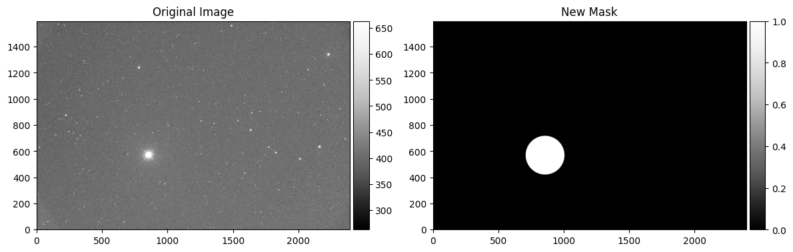
External mask is loaded.
Masking source... [sigma = 5, mask_radius_factor = 2]
2472 non-saturated, 12 saturated sources
2484 sources masked.
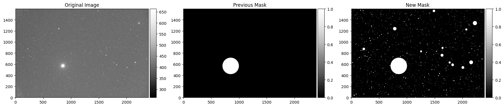
For detailed calculation of background and background RMS maps, see other examples: Background Estimation and Background RMS Estimation.
These examples show how to optimize background subtraction parameters for different observing conditions and field characteristics.
[9]:
target_bkg = target_img.calculate_bkg(
target_srcmask = target_srcmask,
target_ivpmask = None,
is_2D_bkg = True,
box_size = 256,
filter_size = 5,
save = False,
verbose = True,
visualize = True,
save_fig = False,
)
target_bkgrms = target_img.calculate_bkgrms_from_propagation(
target_bkg = target_bkg)
External mask is loaded.
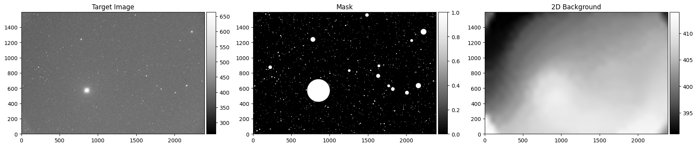
Warning: mbias_img.ncombine is None. Using 9 as default value.
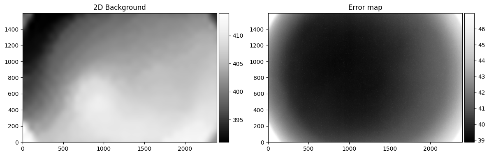
[10]:
target_catalog_advanced = aperturephot.sex_photometry(
target_img = target_img,
target_bkg = target_bkg,
target_bkgrms = target_bkgrms,
target_mask = target_brightstar_mask,
sex_params = None,
detection_sigma = 3,
aperture_diameter_arcsec = [5, 7, 10],
aperture_diameter_seeing = [2.5, 3.5],
saturation_level = 60000,
kron_factor = 2.5,
save = False,
verbose = False,
visualize = True,
save_fig = False,
)
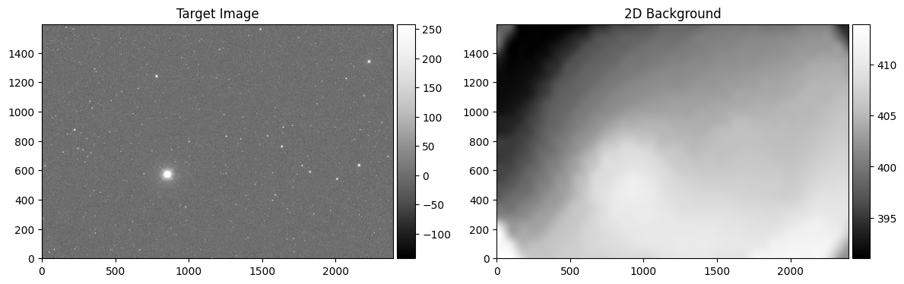
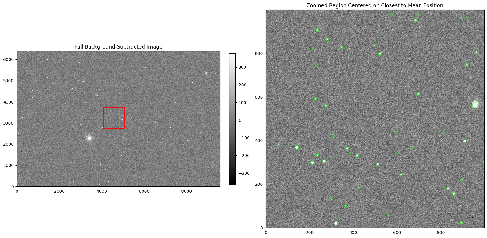
[11]:
# Run for all target_imglist with multiprocessing
from multiprocessing import Pool
from tqdm import tqdm
def aperturephotometry(target_img):
target_catalog = aperturephot.sex_photometry(
target_img = target_img,
target_bkg = target_img.bkgmap,
target_bkgrms = target_img.bkgrms,
target_mask = None,
sex_params = None,
detection_sigma = 5,
aperture_diameter_arcsec = [5, 7, 10],
aperture_diameter_seeing = [2.5, 3.5],
saturation_level = 60000,
kron_factor = 2.5,
save = True,
verbose = False,
visualize = False,
save_fig = False,
)
#target_img.clear(verbose = False)
#target_img.bkgmap.clear(verbose = False)
#target_img.bkgrms.clear(verbose = False)
with Pool(processes = 16) as pool:
# Use tqdm with imap to show progress
list(tqdm(pool.imap(aperturephotometry, target_imglist),
total=len(target_imglist),
desc="Photometry..."))
Photometry...: 100%|██████████| 90/90 [06:56<00:00, 4.63s/it]
4. Forced Aperture Photometry
Forced photometry is a technique where we perform photometric measurements at predetermined positions, regardless of whether sources are detected at those locations. This approach is particularly useful for:
Monitoring known sources at specific coordinates
Comparing photometry across different epochs or filters
Measuring sources that may be too faint for automatic detection
Following up on transient events or variable stars
In this section, we demonstrate two types of forced photometry:
Circular aperture photometry - Ideal for point sources (stars, quasars)
Elliptical aperture photometry - Better suited for extended sources (galaxies, nebulae)
4.1. Circular Aperture Forced Photometry
Circular aperture photometry is the most common method for measuring point sources such as stars, quasars, and other compact objects. This technique uses circular apertures centered on the target coordinates to measure the total flux.
When to Use Circular Apertures:
Point sources (stars, quasars, compact objects)
Unresolved sources where the object appears as a single point
Key Parameters:
Aperture diameter: Can be fixed (in arcseconds) or scaled by seeing conditions
Background subtraction: Uses pre-calculated background maps for accurate measurements
Multiple apertures: Allows comparison of different aperture sizes to optimize signal-to-noise
Let’s demonstrate this with a known point source in our field.
[12]:
point_source = dict(
ra = 325.66015654,
dec = -77.300872906,
radius_arcsec = 5
)
target_img.show_position(
x = point_source['ra'],
y = point_source['dec'],
radius_arcsec = 5,
coord_type = 'coord',
zoom_radius_pixel = 200,
scale = 'zscale'
)
[12]:
(<Figure size 600x600 with 1 Axes>, <Axes: title={'center': 'True'}>)
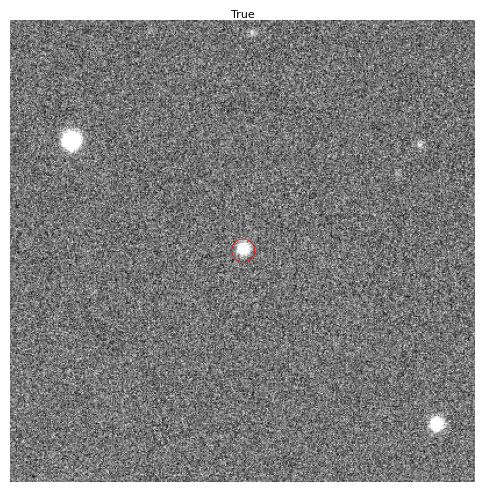
Point Source Coordinates
We’ve identified a point source at coordinates:
RA: 325.66015654°
Dec: -77.300872906°
Aperture radius: 5 arcseconds
The visualization above shows the source location and the circular aperture that will be used for photometry. Now let’s perform the circular aperture photometry with multiple aperture sizes to find the optimal measurement.
[13]:
target_catalog_circular = aperturephot.circular_photometry(
target_img = target_img,
x_arr = point_source['ra'],
y_arr = point_source['dec'],
aperture_diameter_arcsec = [5, 7, 10],
aperture_diameter_seeing = [2.5, 3.5],
unit = 'coord',
target_bkg = target_img.bkgmap,
target_mask = None,
target_bkgrms = target_img.bkgrms,
save = False,
verbose = False,
visualize = True,
save_fig = False,
)
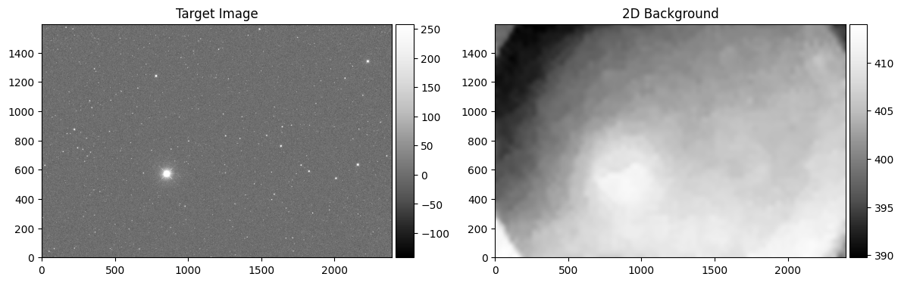
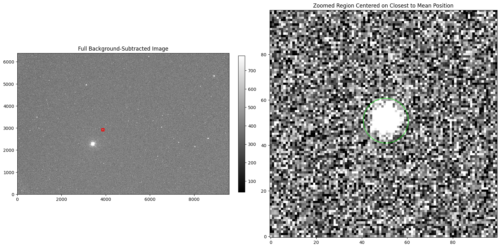
[15]:
target_catalog_circular.data
[15]:
| X_IMAGE | Y_IMAGE | X_WORLD | Y_WORLD | NPIX_APER | FLUX_APER | MAG_APER | FLUXERR_APER | MAGERR_APER | SKYSIG_APER | UL5_APER | UL3_APER | NPIX_APER_1 | FLUX_APER_1 | MAG_APER_1 | FLUXERR_APER_1 | MAGERR_APER_1 | SKYSIG_APER_1 | UL5_APER_1 | UL3_APER_1 | NPIX_APER_2 | FLUX_APER_2 | MAG_APER_2 | FLUXERR_APER_2 | MAGERR_APER_2 | SKYSIG_APER_2 | UL5_APER_2 | UL3_APER_2 | NPIX_APER_3 | FLUX_APER_3 | MAG_APER_3 | FLUXERR_APER_3 | MAGERR_APER_3 | SKYSIG_APER_3 | UL5_APER_3 | UL3_APER_3 | NPIX_APER_4 | FLUX_APER_4 | MAG_APER_4 | FLUXERR_APER_4 | MAGERR_APER_4 | SKYSIG_APER_4 | UL5_APER_4 | UL3_APER_4 |
|---|---|---|---|---|---|---|---|---|---|---|---|---|---|---|---|---|---|---|---|---|---|---|---|---|---|---|---|---|---|---|---|---|---|---|---|---|---|---|---|---|---|---|---|
| float64 | float64 | float64 | float64 | float64 | float64 | float64 | float64 | float64 | float64 | float64 | float64 | float64 | float64 | float64 | float64 | float64 | float64 | float64 | float64 | float64 | float64 | float64 | float64 | float64 | float64 | float64 | float64 | float64 | float64 | float64 | float64 | float64 | float64 | float64 | float64 | float64 | float64 | float64 | float64 | float64 | float64 | float64 | float64 |
| 3862.600993376912 | 2924.854172695419 | 325.66015654 | -77.300872906 | 76.5667421487148 | 33697.23024050704 | -11.318985513254107 | 500.00203797547437 | 0.016110235506247742 | 344.1948525899388 | -8.089435938830947 | -7.534814064790057 | 150.07081461148098 | 40841.10508069295 | -11.527743711839946 | 625.9960187727874 | 0.016641727501574572 | 482.03070711241617 | -8.455111773992641 | -7.900489899951752 | 306.2669685948592 | 45481.4100576182 | -11.644584801580022 | 809.4495460038898 | 0.01932325046448831 | 688.4402515661817 | -8.842090647409243 | -8.287468773368353 | 195.27601427764165 | 43102.890300995976 | -11.586265982808268 | 686.3492119667781 | 0.017288728977006056 | 549.8290357775883 | -8.597994187481612 | -8.043372313440722 | 382.7409879841777 | 45900.01122239523 | -11.65453197930196 | 882.3990329085555 | 0.020872600061695234 | 769.5325207682262 | -8.962992455897353 | -8.408370581856461 |
4.2. Elliptical Aperture Forced Photometry
Elliptical aperture photometry is designed for extended sources such as galaxies, nebulae, and other non-circular objects. This method uses elliptical apertures that can be oriented and scaled to match the source morphology.
When to Use Elliptical Apertures:
Extended sources (galaxies, nebulae, star clusters)
Non-circular objects with distinct major and minor axes
Sources with known morphology from previous observations
Optimized photometry for irregularly shaped objects
Key Parameters:
Semi-major axis (a): Half the length of the longest axis
Semi-minor axis (b): Half the length of the shortest axis
Position angle (θ): Orientation of the major axis (degrees from East)
Ellipticity: Ratio of minor to major axis (b/a)
Let’s demonstrate this with an extended source in our field.
[16]:
extended_source = dict(
ra = 324.25336362,
dec = -77.573930752,
radius_arcsec = 5,
a = 5.85,
b = 2.909,
theta = 56.6,
)
target_img.show_position(
x = extended_source['ra'],
y = extended_source['dec'],
radius_arcsec = extended_source['radius_arcsec'],
a_arcsec = extended_source['a'],
b_arcsec = extended_source['b'],
theta_deg = extended_source['theta'],
downsample = 1,
coord_type = 'coord',
zoom_radius_pixel = 200,
scale = 'zscale'
)
[16]:
(<Figure size 600x600 with 1 Axes>, <Axes: title={'center': 'True'}>)
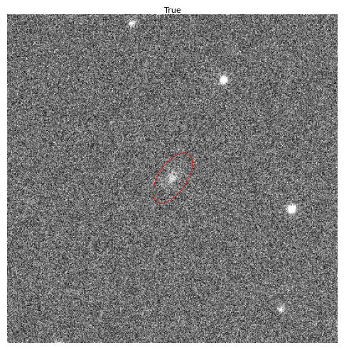
Extended Source Parameters
We’ve identified an extended source with the following characteristics:
RA: 324.25336362°
Dec: -77.573930752°
Semi-major axis (a): 5.85 arcseconds
Semi-minor axis (b): 2.909 arcseconds
Position angle (θ): 56.6° (from North, counterclockwise)
Ellipticity (b/a): 0.497 (moderately elongated)
The visualization above shows the source location and the elliptical aperture that matches the source morphology. The elliptical aperture will provide more accurate photometry for this extended object compared to a circular aperture.
[17]:
target_catalog_ellip = aperturephot.elliptical_photometry(
target_img = target_img,
x_arr = extended_source['ra'],
y_arr = extended_source['dec'],
sma_arr = extended_source['a'],
smi_arr = extended_source['b'],
theta_arr = extended_source['theta'],
unit = 'coord',
target_bkg = target_img.bkgmap,
target_mask = None,
target_bkgrms = target_img.bkgrms,
save = False,
verbose = False,
visualize = True,
save_fig = False,
)

[WARNING] No matching .fits found for: /home/hhchoi1022/ezphot/data/scidata/7DT/7DT_C361K_HIGH_1x1/T00528/7DT14/m600/subbkg_calib_7DT14_T00528_20250906_025855_m600_100.fits.ellip.cat
[ERROR] No corresponding FITS file found for /home/hhchoi1022/ezphot/data/scidata/7DT/7DT_C361K_HIGH_1x1/T00528/7DT14/m600/subbkg_calib_7DT14_T00528_20250906_025855_m600_100.fits.ellip.cat
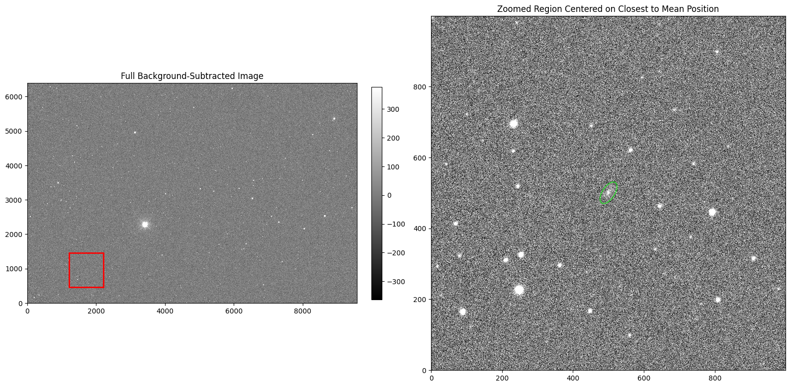
[ ]: